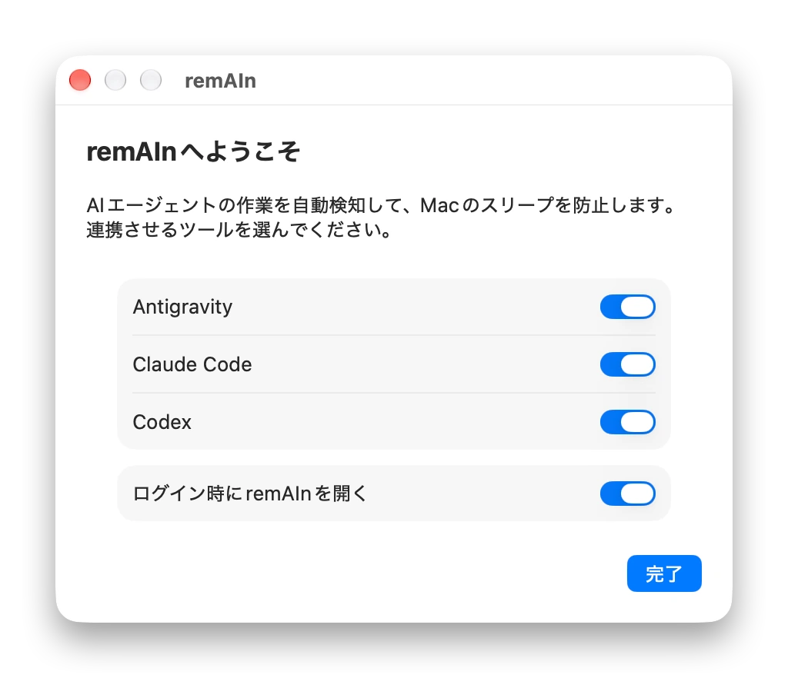
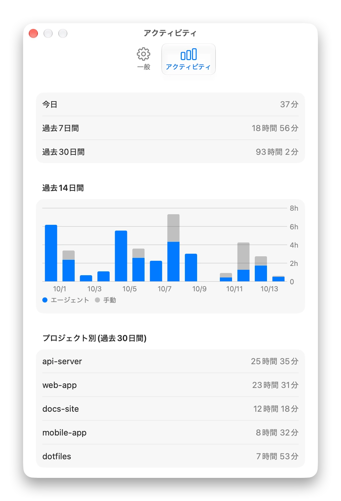

Just remAIAIn awake.
AIの長い作業と、Macのスリープは、相性が悪い。
こんな経験、ありませんか?
作業の途中で、Macがスリープしてしまう
長い作業を任せて席を外し、戻ってみたら、途中で止まっていた。
起こしっぱなしにすると、戻し忘れる
caffeinateのような方法は、始めるのも止めるのも自分で。忘れると、一晩中つけっぱなしで、朝にはバッテリーが空っぽです。
ターミナルで動くものばかりではない
エディタやデスクトップアプリの中で動くエージェントには、caffeinateのような方法は使えません。
作業しているあいだだけ、起きている。
見ているのは、時計ではなくエージェント。終わったら、すぐ手を離します。

エージェントの様子を、見守る
作業を始めたか、進めているか、あなたの返事を待っているか、終わったか。remAInはそれを知っていて、その間だけMacを起こしておきます。
メニューバーのアイコンを見れば、今の状態がひと目でわかります。きらめいていれば作業中、月なら、いつでもスリープできる状態です。

どのエージェントも、いくつ同時でも。
Antigravity、Claude Code、Codexに対応。そのほかのコマンドも、remAIn経由で実行すれば対象にできます。複数を同時に走らせても大丈夫。最後の1つが終わったところで、Macはスリープします。

蓋を閉じても、作業は続く。
「蓋を閉じても動かす」をオンにすると、MacBookを閉じたままでも、エージェントは働き続けます。鞄に入れて、テザリングで移動中に、なんて使い方も。
熱くなったとき、バッテリーが減ったとき、決めた時間が来たときは、自動で止まります。最初はオフになっています。

途中で止まっても、ちゃんと気づく。
エージェントが落ちたり、ウィンドウを閉じたりしても、remAInが気づいて、Macをまたスリープできる状態に戻します。長い作業が途中で終わったときは、通知でお知らせします。
静かで、気がきく。
邪魔にならないための、小さな工夫。
鞄の中でも、安心
バッテリーが少ないとき、低電力モードのとき、熱くなりすぎたときは、Macをスリープさせて、その理由もお知らせ。落ち着いたら、自動で再開します。
終わったら、お知らせ
作業が終わったとき、エージェントがあなたの返事を待っているときに、通知が届きます。終わったあとに、画面を消す、Macをスリープさせる、も選べます。
時間の使い方が、わかる
Macを起こしていた時間を、日ごと、プロジェクトごとに見られます。記録はMacの中だけ。90日たつと消えます。
設定は、ワンクリック
初めて起動すると、使っているエージェントが見つかります。選んでつなぐだけで、設定は終わりです。
プライバシーも安心
アカウントも、アクセス解析も、インターネット接続もありません。すべてMacの中で完結します。
やめたいときも、簡単
ボタン1つで、remAInが加えたものを、すべて元どおりに。表示は、日本語と英語に対応しています。
動画で見る。
2分ちょっとで、全体がわかります。
いつものエージェントと、一緒に。
ワンクリックでつなげば、どこで動かしていても、remAInが見守ります。

remain runを付けて実行すれば、動いているあいだだけMacを起こします。ビルドでも、ダウンロードでも。
$ remain run -- npm run build
Macの外には、何も出ていかない。
アカウントも、アクセス解析も、インターネット接続もありません。残すのは、どのプロジェクトで起こしていたかの記録だけ。90日たつと消えます。
通知任意です。作業が終わったときに、お知らせします。ログイン時に開く任意です。いつでも使える状態にしておきます。パスワード蓋を閉じても動かす設定をするときだけ、必要です。インターネット使いません。
はじめるのは、1分で。
macOS 14以降。Apple siliconにもIntelにも対応しています。
ダウンロード
Releasesからzipをダウンロードして展開し、remAInを「アプリケーション」フォルダへ移します。
最初に一度だけ許可
Appleの署名がないため、初回は警告が出ます。システム設定 → プライバシーとセキュリティで、「このまま開く」を選んでください。
エージェントをつなぐ
初回の起動で、使っているエージェントが見つかります。つなぎたいものを選んだら、あとはいつもどおり使うだけです。
個人で作っている無料のアプリのため、Appleの署名がありません。ソースコードはGitHubで公開しています。
よくある質問
インターネットにつながりますか?
いいえ。remAInは、インターネットには一切つながりません。アカウントも、アクセス解析もありません。
エージェントが落ちたり、ウィンドウを閉じたりしたら?
remAInが気づいて、Macをまたスリープできる状態に戻します。長い作業だったときは、通知でお知らせします。自分で止めたときは、何も出ません。
caffeinateと、何が違うのですか?
caffeinateは、始めるのも止めるのも自分でやる道具です。remAInは、エージェントの動きを見て、自動で起こし、自動で手を離します。エディタやデスクトップアプリの中のエージェントにも使えます。
鞄の中で、バッテリーが空になりませんか?
バッテリーが少ないとき、低電力モードのとき、熱くなりすぎたときは、スリープさせます。蓋を閉じても動かす設定は、最初はオフで、上限時間もあります。
なぜ、macOSの警告が出るのですか?
Appleの署名がないためです。システム設定 → プライバシーとセキュリティで一度だけ許可すれば、次からは出ません。